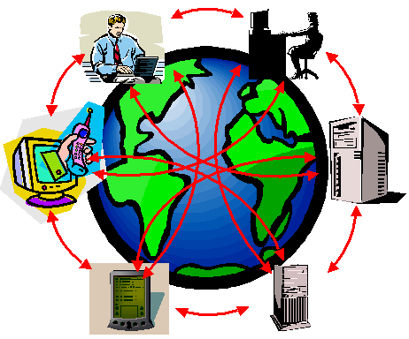

Verso il Web of Trust
Oreste Signore
Ufficio Italiano W3C presso il C.N.R.
Area della Ricerca di Pisa San Cataldo - Via G. Moruzzi, 1 -
56124 Pisa
Email: oreste@w3.org
Etica di Internet
Incontri italo-francesi
2005
Euristica e semantica del Web: quali basi teoriche per un web di
fiducia?
Roma, 17 giugno 2005
Slides URI: http://www.w3c.it/talks/2005/ew3/
Contenuto
- Il Web e il W3C
- Il Semantic Web
- Il Web Policy Aware
Il World Wide Web

- World Wide Web Consortium (W3C - http://www.w3.org/)
- 3 host (MIT,
ERCIM, Keio)
- 14 offices ( Australia,
Benelux, Finland, Germany and Austria, Greece, Hong Kong, Hungary, Israel, Italy, Korea, Morocco, Spain, Sweden, United Kingdom and Ireland)
- Basato sul "consensus"
- Regole definite nel Process Document (http://www.w3.org/Consortium/Process/)
- La "mission":
Leading the Web to its Full Potential
- "Enable web access for anyone, anywhere,
anytime, using any device"
I membri W3C guidano l' evoluzione del Web
Alcuni elementi importanti
- Quando qualcuno, da qualche parte, rende disponibile un'
informazione, questa deve essere accessibile da
chiunque, con qualsiasi computer, in
qualsiasi paese (a meno di problemi di
autorizzazione)
- Il Web è uno spazio informativo universale, in cui
ognuno può accedere all' informazione e modificarla
(browser/editor)
- Ambiente totalmente decentralizzato
- Interoperabilità tecnologica e semantica
- Non autorità, ma autorevolezza
W3C: gli obiettivi a lungo termine
- Web for Everyone
-
- valore sociale del Web: comunicazione
interpersonale, commercio, condivisione di conoscenza
- rendere questi benefici disponibili a tutti,
indipendentemente da hardware, software, infrastruttura di rete,
lingua madre, cultura, posizione geografica, capacità
fisiche o mentali
- Web on Everything
-
- nuovi dispositivi sono in grado di accedere al Web
- rendere l' accesso al web da qualsiasi dispositivo
semplice, facile e comodo come da un normale
desktop
- Knowledge Base
-
- il Web non è soltanto un immenso
contenitore dal quale attingere informazioni
- le macchine possono svolgere del lavoro utile,
noioso e lungo per gli esseri umani
- Trust and Confidence
-
- le persone devono potersi fidare di chi ha avuto la
loro fiducia
- la tecnologia non può dare garanzie di
fiducia, ma può consentire transazioni con partner nei
quali si ha fiducia (trust)
- promuovere tecnologie che favoriscano un ambiente più
cooperativo, in cui siano garantite individuazione delle
responsabilità, sicurezza, fiducia e segretezza
Contenuto
- Il Web e il W3C
- Il Semantic Web
- Il Web Policy Aware
La proposta originaria
Nel 1989 Tim Berners-Lee propose il World Wide Web

Evoluzione del World Wide Web
Dalla man-machine interaction alla machine to
machine interaction
I limiti attuali
- Nel web tradizionale si rappresenta l' informazione
utilizzando:
- linguaggio naturale
- grafica, elementi multimediali, struttura della pagina
- Spesso è necessario combinare le informazioni
(provenienti da fonti diverse)
- Per gli esseri umani è facile ...
- dedurre fatti da informazioni incomplete
- creare e seguire associazioni mentali
- provarie varie esperienze sensoriali
- aggregare le informazioni indipendentemente dalle tecnologie
utilizzate
- ... ma le macchine non sono intelligenti!
- non possono utilizzare informazioni parziali
- hanno difficoltà ad aggregare informazioni strutturate
in forma diversa
I have a dream ...
"The entertainment system was belting out the Beatles "We Can
Work It Out" when the phone rang. When Pete answered, his phone
turned the sound down by sending a message to all other
local devices that had a volume control. "
...
His sister, Lucy, was on the line from the doctor’s
office At the doctor’s office, Lucy instructed her
Semantic Web agent through her handheld Web
browser. The agent promptly retrieved
information about ...”
(From: The Semantic Web, by Tim Berners-Lee, James Hendler and
Ora Lassila, Scientific American, May 2001)
http://www.scientificamerican.com/2001/0501issue/0501berners-lee.html
L' architettura del Semantic Web
- Il Semantic Web ...
-
- è un' infrastruttura basata su metadati per poter
svolgere ragionamenti sul Web
- estende, non sostituisce il web attuale
Cosa sono i metadati?
- Informazioni, elaborabili automaticamente (machine
understandable), relative a una risorsa web o a qualche
altra cosa
- ... data about data
- ... informazioni che possono essere utilizzate da
intelligent software agents per fare un uso appropriato
delle risorse
- ... dati ...
- ... che possono essere descritti da altri metadati
...
Perché i metadati?
- Nel Web di oggi tutte le informazioni sono "machine
readable"
- Nel Semantic Web le informazioni devono essere "machine
understandable". Quindi occorrono:
- nomi non ambigui per le risorse (URI)
- un data model condiviso per esprimere i metadati
(RDF)
- un modo per accedere ai metadati sul Web
- vocabolari condivisi (ontologie)
Cosa è RDF?
- L' uso efficace dei metadati richiede la definizione di
convenzioni per:
- semantica (definita dalle singole comunità
disciplinari)
- sintassi (organizzazione dei data element per l'
elaborazione automatica)
- struttura (vincolo formale sulla sintassi)
- RDF:
- Resource Description Framework
- strumento base per codifica, scambio e
riutilizzo di metadati strutturati
- consente l' interoperabilità tra applicazioni
che si scambiano sul Web informazioni
machine-understandable
RDF è per il Semantic Web ciò che HTML
è stato per il web
RDF Data Model: resources
- Qualunque cosa descritta da una espressione RDF viene detta
risorsa (resource)
- Una risorsa può essere:
- una pagina web
- una parte di pagina web
- un elemento XML all' interno del documento sorgente
- una collezione di pagine web
- un oggetto non direttamente accessibile sul web (libro,
dipinto, oggetto, ...)
- Le risorse sono sempre individuate da un Universal
Resource Identifier (URI)
Il Data Model RDF: gli statement
Il concetto fondamentale:
- Statement: una tupla di un
subject (o resource), un predicato (o
proprietà) e un value (o object).
ovvero:
- Una risorsa, con una proprietà distinta da un nome, e
un valore della proprietà per quella specifica risorsa,
costituisce un RDF statement
L' oggetto di uno statement può essere un' espressione,
o anche un' altra risorsa.
Un esempio banale
Due espressioni equivalenti in linguaggio
naturale:
- Oreste Signore is the author of DocX
- The author of DocX is Oreste Signore
In RDF:
| Resource |
http://www.w3c.it/Oreste/DocX |
| Property |
author |
| Value |
Oreste Signore |
Con questa rappresentazione grafica:

Un esempio di statement
La persona identificata dal Codice Fiscale
SGNRST99A99X111Y has Name Oreste Signore, Email oreste@w3.org, e
Affiliation C.N.R.. La risorsa http://www.w3c.it/Oreste/DocX has
Author questa persona .

Grafi e Web: prima di RDF
Per le macchine: milioni di risorse collegate ...
... nessuna informazione sul tipo di risorse e di
relazioni
Grafi e Web: dopo RDF
Per le macchine: milioni di risorse collegate ...
... con informazioni sul tipo di risorse e di
relazioni
RDF : un linguaggio per descrivere il significato
delle risorse
È possibile ricercare le risorse in base alle
loro proprietà
Ontologie
- Il Semantic Web ha bisogno di ontologie:
"definisce i concetti e le relazioni usate per descrivere e
rappresentare un dominio di conoscenza"
- Serve quindi un Web Ontologies Language per
definire:
- la terminologia usata in un contesto specifico
- vincoli e proprietà
- le caratteristiche logiche delle proprietà
- l' equivalenza dei termini tra le varie ontologie
- etc.
- Il linguaggio deve essere un compromesso tra:
- ricchezza semantica
- fattibilità, implementabilità
Web Ontology Language (OWL) è la W3C
Recommendation
Ontologie sul Web
- Le ontologie sono sul Web. Quindi:
- le applicazioni possono utilizzare varie ontologie
differenti, oppure ... ...
- ... le stesse ontologie, ma espresse in lingue diverse
- le equivalenze tra termini, e le relazioni intercorrenti tra
di loro, possono diventare un problema non banale
Il Semantic Web (ricapitolando)
- Interazione machine-to-machine
- Intelligent software agents
- Metadati
- Decentralizzazione
- Armonizzazione delle ontologie
- Reasoning
- Interoperabilità semantica
- Fiducia
- Searching the Web
Molte delle tecnologie necessarie sono già
disponibili
La conoscenza può essere espressa ed esportata
utilizzando un formalismo interoperabile
Alcuni problemi
- Ontologie
-
- definizione
- condivisione
- armonizzazione
- Grafi RDF
-
- memorizzazione
- query
- autentica (signing graphs)
- ripudio
- Trust
-
Contenuto
- Il Web e il W3C
- Il Semantic Web
- Il Web Policy Aware
Successi e insuccessi del Web
- I successi
-
- disseminazione dell' informazione
- accesso all' informazione
- diffusione in ambienti commerciali e accademici
- Gli insuccessi
-
- protezione della privacy
- approccio equilibrato alla tutela della proprietà
intellettuale
- esigenze di base per la sicurezza e il controllo dell'
accesso
- Le soluzioni possibili
-
- legali: non sono sufficienti
- tecnologiche: non banali
Perché un Web "Policy Aware"
(fa riferimento al lavoro:
Creating a Policy-Aware Web: Discretionary, Rule-based
Access for the World Wide Web,
di
Daniel J. Weitzner, Jim Hendler, Tim Berners-Lee, Dan Connolly)
- Sviluppo del Web come spazio informativo sociale
frenato da:
- mancanza di sistemi sofisticati per il controllo
della condivisione dell' informazione
- necessità di definire a priori la
politica
- granularità alta
- Vantaggi di un Web "Policy aware"
- politiche definite in modo dichiarativo
- maggior trasparenza senza bisogno di accordi
preventivi
- maggior controllo da parte dei detentori dell'
informazione
Le tecnologie del Semantic Web possono rendere il Web un
ambiente sociale più ricco
I requisiti per un Web Policy Aware
- Trasparenza
-
- persone e macchine devono essere in grado di comprendere le
regole che disciplinano le risorse
- varie proposte: Platform for Privacy Preferences
(P3P), Security Assertions Markup Language
(SAML), Enterprise Privacy Authorization Language
(EPAL), eXtensible Access Control Markup Language
(XACML)
- Meccanismi di conformità
-
- esprimere le regole in modo formale e machine-readable
- Identificazione delle responsabilità
-
- le regole possono essere violate (inavvertitamente o
dolosamente)
- occorre poter rilevare le violazioni e identificare gli
autori
Le differenze
Il Web Policy Aware è diverso da un tradizionale
sistema di controllo degli accessi
- Approccio tradizionale (crittografia)
-
- definizione preventiva delle politiche
- impegno gestionale per il mantenimento della PKI
(Public Key Infrastructure)
- accettabile in alcuni contesti (banche, intelligence)
- troppo gravosa per le realtà piccole
- spesso si rinuncia alla protezione
- Policy Aware Web
-
- politiche di sicurezza descrittive
- carico (basso) della verifica a carico del client web
- accesso basato su regole codificato a livello dei protocolli web
- enfasi sulla decentralizzazione
P3P

L' accesso basato su regole
- Caratteristiche
-
- insieme di regole dichiarative per definire le regole di accesso "a grana fine"
- per accedere all' informazione bisogna dimostrare il diritto all' accesso
- MAC (Mandatory Access Control): il sistema definisce a priori i criteri di protezione
- DAC (Discretionary Access Control): il detentore dell' informazione definisce a livello locale le politiche di accesso
- I problemi tecnici
-
- interoperabilità
- varietà di applicazioni
- necessità di un meccanismo di dimostrazione
(proof)
- gestire le possibili incoerenze
- scalabilità
Un esempio: il sito W3C

Decentralizzazione della dimostrazione

Conclusioni
- I membri del W3C guidano l' evoluzione del Web
- Leading the web at its full potential
- Il Semantic Web è l' evoluzione del Web attuale
- Molte tecnologie sono ad un buon punto di sviluppo
- Alcune di esse possono essere la base per la soluzione di
problemi importanti
- È possibile controllare l' accesso nel Web usando HTTP per realizzare
un meccanismo scalabile
per lo scambio di regole e dimostrazioni.
Grazie per l’ attenzione
?
Se non è sul web non esiste ...
... troverete sul sito dell' Ufficio (http://www.w3c.it/)
questa presentazione alla URI:http://www.w3c.it/talks/2005/ew3/